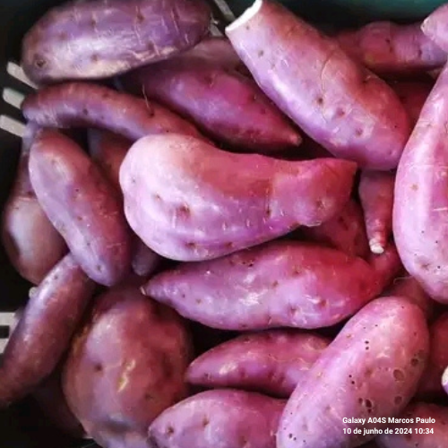
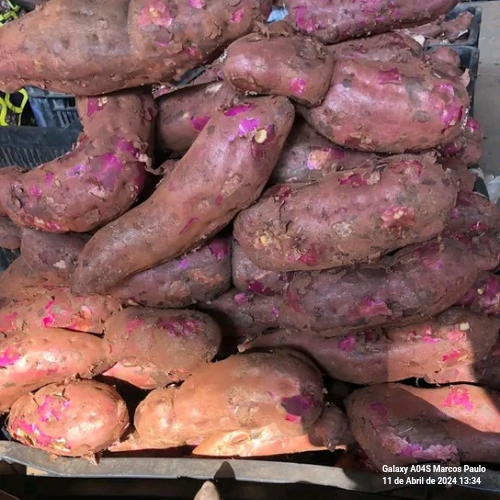
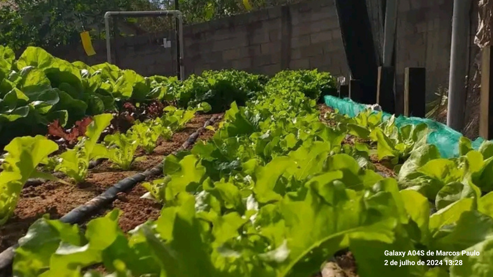
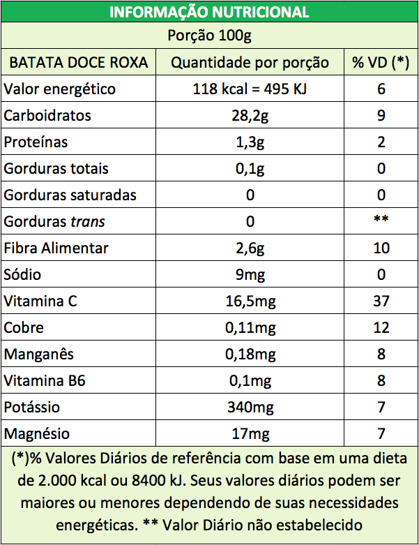

Batata Doce



R$ 4,50 kg
Compre AgoraInformações da Batata Doce
Batata doce cultivada com práticas agrícolas sustentáveis, rica em nutrientes e perfeita para uma dieta saudável. Fresca e saborosa, direto da nossa fazenda para sua mesa.
Jose dos Santos
Jose dos Santos é um agricultor dedicado, especializado no cultivo de batata doce. Trabalhando na Fazenda Terra Viva, ele se esforça para produzir vegetais de alta qualidade usando métodos de agricultura sustentável.
Tabela Nutricional
Ingredientes
Produto natural, sem adição de ingredientes artificiais.